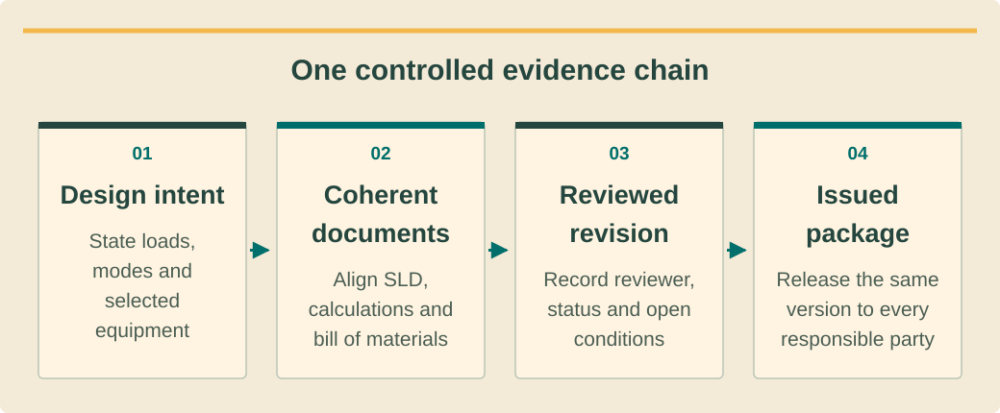

Design and permittingתכנון ורישויออกแบบและขออนุญาต · 6 / 9
SLD and evidence packתרשים חד־קווי ותיק ראיותSLD และชุดหลักฐาน
Make a coherent submission package whose documents describe the same installation.יוצרים תיק עקבי שכל מסמכיו מתארים אותה התקנה.จัดชุดยื่นที่เอกสารทุกชิ้นอธิบายระบบเดียวกัน
What you will be able to doמה תדעו לעשותสิ่งที่คุณจะทำได้
- Trace equipment and circuit identifiers across documents.לעקוב אחר מזהי ציוד ומעגל בין מסמכים.ติดตามรหัสอุปกรณ์และวงจรข้ามเอกสาร
- Separate design, authority and completion evidence.להפריד ראיות תכנון, רשות והשלמה.แยกหลักฐานออกแบบ หน่วยงาน และเสร็จงาน
- Control revisions, signatures and unresolved comments.לשלוט בגרסאות, חתימות והערות פתוחות.ควบคุมฉบับ ลายเซ็น และข้อทักค้าง
Use the SLD as a map of relationshipsהתרשים ממפה קשריםใช้ SLD เป็นแผนที่ความสัมพันธ์
A single-line diagram explains electrical relationships at a useful level: sources, connection point, equipment, isolation, protection, metering and essential-load boundaries. It must reflect all intended operating modes. A polished graphic with unlabeled devices cannot support an engineering review or a reliable commissioning plan.תרשים חד־קווי מסביר קשרים חשמליים: מקורות, נקודת חיבור, ציוד, בידוד, הגנות, מדידה וגבול עומס חיוני. עליו לייצג את כל מצבי העבודה. גרפיקה מלוטשת ללא מזהי התקנים אינה תומכת בבדיקה הנדסית או בהרצה אמינה.SLD แสดงความสัมพันธ์ไฟฟ้า เช่น แหล่งจ่าย จุดเชื่อม อุปกรณ์ แยก ป้องกัน วัด และขอบเขตโหลดจำเป็น ต้องสะท้อนทุกโหมด ภาพสวยแต่ไม่มีรหัสอุปกรณ์ใช้ตรวจวิศวกรรมหรือวางทดสอบไม่ได้
Use stable identifiers that also appear on schedules and site labels. A reviewer should trace a string, inverter and protective device across the layout, SLD, bill of materials and test form. The drawing level and signatures must follow the actual submission requirements confirmed with the responsible parties.השתמשו במזהים יציבים בטבלאות ובתוויות שטח. הבודק צריך לעקוב אחרי מחרוזת, ממיר והגנה בפריסה, בתרשים, ברשימת ציוד ובטופס בדיקה. רמת פירוט וחתימות לפי דרישות הגשה שאומתו מול הגורמים.ใช้รหัสคงที่ซึ่งตรงตารางและป้ายหน้างาน ผู้ตรวจควรตามสตริง อินเวอร์เตอร์ และป้องกันจากผัง SLD รายการวัสดุถึงใบทดสอบ ระดับรายละเอียดและลายเซ็นตามข้อยื่นที่ยืนยันกับผู้รับผิดชอบ
Separate evidence by the question it answersמפרידים ראיות לפי השאלהแยกหลักฐานตามคำถามที่ตอบ
Design evidence explains why the system is suitable: survey, calculations, layouts and professional review. Authority evidence establishes which permissions or notifications apply and their actual status. Product evidence identifies the precise equipment and applicable certificates. These categories support one another but cannot replace one another.ראיות תכנון מסבירות התאמה: סקר, חישובים, פריסה ובדיקה מקצועית. ראיות רשות מבססות אישורים ודיווחים ומצבם. ראיות מוצר מזהות ציוד מדויק ותעודות. הקבוצות תומכות זו בזו אך אינן מחליפות זו את זו.หลักฐานออกแบบอธิบายความเหมาะสมด้วยสำรวจ คำนวณ ผัง และตรวจวิชาชีพ หลักฐานหน่วยงานระบุอนุญาตหรือแจ้งที่ใช้และสถานะจริง หลักฐานผลิตภัณฑ์ระบุรุ่นและใบรับรอง แต่ละกลุ่มสนับสนุนกันแต่แทนกันไม่ได้
Completion evidence records what was actually installed and tested, including deviations resolved by the designer. Keep it distinct from proposed settings or blank templates. A signed purchase order is commercial evidence; it does not prove that an inverter was installed, tested or accepted for operation.ראיות השלמה מתעדות מה הותקן ונבדק, כולל סטיות שנפתרו בידי מתכנן. הפרידו אותן מהגדרות מוצעות או תבניות ריקות. הזמנת רכש חתומה היא ראיה מסחרית, לא הוכחה שממיר הותקן, נבדק או התקבל להפעלה.หลักฐานจบงานบันทึกสิ่งติดตั้งและทดสอบจริง รวมการเบี่ยงเบนที่ผู้ออกแบบปิด แยกจากค่าที่เสนอหรือแบบฟอร์มเปล่า ใบสั่งซื้อเซ็นเป็นหลักฐานการค้า ไม่พิสูจน์ติดตั้ง ทดสอบ หรือยอมรับใช้งานอินเวอร์เตอร์
See the ideaרואים את הרעיוןมองเห็นแนวคิด
One controlled evidence chainשרשרת ראיות מבוקרת אחתสายหลักฐานที่ควบคุมได้

Read the diagram as textקריאת התרשים כטקסטอ่านแผนภาพเป็นข้อความ
- Design intentכוונת תכנוןเจตนาออกแบบ — State loads, modes and selected equipmentמציינים עומסים, מצבים וציוד נבחרระบุโหลด โหมด และอุปกรณ์ที่เลือก
- Coherent documentsמסמכים עקבייםเอกสารสอดคล้อง — Align SLD, calculations and bill of materialsמתאמים תרשים חד־קווי, חישובים ורשימת ציודให้ SLD การคำนวณ และรายการอุปกรณ์ตรงกัน
- Reviewed revisionמהדורה שנבדקהฉบับผ่านทบทวน — Record reviewer, status and open conditionsמתעדים בודק, סטטוס ותנאים פתוחיםบันทึกผู้ทบทวน สถานะ และเงื่อนไขค้าง
- Issued packageחבילה מופצתชุดเอกสารออกใช้ — Release the same version to every responsible partyמפיצים אותה מהדורה לכל בעלי האחריותส่งฉบับเดียวกันให้ผู้รับผิดชอบทุกฝ่าย
Control revisions at the package levelשולטים בגרסת התיק כולוควบคุมฉบับทั้งชุด
Give the package a register listing document identifier, revision, date, owner, reviewer and status. Maintain a single issued set while retaining superseded versions for traceability. Revisions should identify their change and the affected downstream records, not merely replace a file called final with another file of the same name.צרו רישום תיק עם מזהה מסמך, גרסה, תאריך, בעלים, בודק ומצב. החזיקו סט מופץ אחד ושמרו ישנים למעקב. גרסה תציין שינוי ומסמכי המשך מושפעים, לא רק תחליף קובץ ״סופי״ בקובץ זהה בשם.ทำทะเบียนชุดระบุรหัสเอกสาร ฉบับ วันที่ เจ้าของ ผู้ตรวจ และสถานะ มีชุดออกใช้เดียวแต่เก็บเก่าไว้ติดตาม ฉบับใหม่ต้องบอกสิ่งเปลี่ยนและเอกสารต่อเนื่องที่กระทบ ไม่แทนไฟล์ชื่อ final เฉย ๆ
A battery addition can affect the SLD, mode description, protection, product list, permissions and handover instructions. The coordinator checks that these revisions travel together. Only a genuine authorized signature establishes that person’s review; never copy a signature image to make an incomplete package look ready.הוספת סוללה עשויה להשפיע על תרשים, מצבים, הגנות, רשימת ציוד, אישורים והוראות מסירה. המתאם בודק שכל הגרסאות מתעדכנות יחד. רק חתימה מורשית אמיתית מעידה על בדיקה; אין להעתיק תמונת חתימה כדי להציג תיק חסר כמוכן.เพิ่มแบตอาจกระทบ SLD โหมด ป้องกัน รายการสินค้า อนุญาต และคู่มือส่งมอบ ผู้ประสานตรวจให้แก้พร้อมกัน ลายเซ็นจริงจากผู้มีอำนาจจึงยืนยันการตรวจ ห้ามคัดรูปเซ็นเพื่อทำให้ชุดไม่ครบดูพร้อม
Run a cross-document review before submissionמבצעים בדיקה רוחבית לפני הגשהตรวจข้ามเอกสารก่อนยื่น
Select several critical items and trace them end to end: meter/customer identity, inverter model and capacity, roof footprint and connection point. Check units carefully: DC kWp, AC kW and apparent kVA describe different quantities. Inconsistent quantities can lead both design and administrative reviewers down the wrong path.בחרו פריטים קריטיים ועקבו מקצה לקצה: זהות מונה וצרכן, דגם והספק ממיר, שטח גג ונקודת חיבור. בדקו יחידות: kWp ב־DC, kW ב־AC ו־kVA מתארים גדלים שונים. סתירה עלולה להטעות תכנון ורישוי.เลือกรายการสำคัญติดตามตั้งแต่ต้น เช่น มิเตอร์และชื่อผู้ใช้ รุ่นและขนาดอินเวอร์เตอร์ พื้นที่หลังคา จุดเชื่อม ตรวจหน่วย DC kWp, AC kW และ kVA ต่างกัน ค่าที่ขัดกันทำให้ทั้งผู้ตรวจแบบและงานอนุญาตเลือกทางผิด
Keep a comment log with severity, owner, due date and closure evidence. A package can be ready for preliminary review while still prohibited from construction release. State the purpose on its cover and avoid describing an application receipt as an approval decision or an approved design as an as-built record.נהלו הערות עם חומרה, אחראי, יעד וראיית סגירה. תיק יכול להיות מוכן לבדיקה ראשונית ועדיין אסור לביצוע. כתבו מטרה בכריכה ואל תציגו קבלה על הגשה כאישור או תכנון מאושר כתיעוד ביצוע.เก็บข้อทักพร้อมระดับ เจ้าของ วันกำหนด และหลักฐานปิด ชุดอาจพร้อมตรวจเบื้องต้นแต่ยังปล่อยก่อสร้างไม่ได้ ระบุวัตถุประสงค์หน้าปก อย่าเรียกใบรับคำขอว่าอนุมัติหรือแบบอนุมัติว่า as-built
Worked exampleדוגמה פתורהตัวอย่างพร้อมวิธีทำ
A battery appears in only one drawingסוללה מופיעה רק במסמך אחדแบตปรากฏในแบบเดียว
Training scenario: the issued SLD revision C includes a battery, the equipment list is revision B without it, and the mode description covers grid-connected solar only. A delivery date has already been reserved.תרחיש תרגול: תרשים מופץ גרסה C כולל סוללה, רשימת ציוד B אינה כוללת אותה ותיאור מצבים מכסה רק סולארי ברשת. כבר נשמר מועד אספקה.สถานการณ์ฝึก: SLD ฉบับ C มีแบต รายการอุปกรณ์ B ไม่มี และคำอธิบายโหมดมีแต่โซลาร์ต่อโครงข่าย จองวันส่งแล้ว
- Flag a package inconsistency that affects procurement, mode design and potential approval scope.סמנו סתירה המשפיעה על רכש, מצבים והיקף אישורים אפשרי.ระบุความไม่ตรงกระทบซื้อ แบบโหมด และขอบเขตอนุญาตที่อาจเปลี่ยน
- Ask the design owner to confirm the approved scope and synchronize every affected document.בקשו מבעל התכנון לאשר היקף ולעדכן יחד מסמכים מושפעים.ให้เจ้าของแบบยืนยันขอบเขตและแก้เอกสารกระทบพร้อมกัน
- Release procurement only after the package and any required authority review are resolved.שחררו רכש רק אחרי פתרון התיק ובדיקת רשות אם נדרשת.ปล่อยซื้อเมื่อชุดและการทบทวนหน่วยงานที่ต้องมีเรียบร้อย
The booking date remains a scheduling constraint; it cannot decide the technical scope.מועד הזמנה נותר אילוץ תזמון ואינו קובע היקף טכני.วันจองเป็นข้อจำกัดแผน ไม่ใช่ตัวตัดสินขอบเขตเทคนิค
Your turnעכשיו מתרגליםถึงเวลาฝึกฝน
Classify three recordsמסווגים שלושה מסמכיםจำแนกสามเอกสาร
A resort file contains a stamped application receipt, an unsigned proposed SLD and a completed test sheet for an older inverter serial. Decide whether it is ready to energize the new system and explain the evidence gaps.תיק נופש כולל קבלת הגשה חתומה, תרשים מוצע לא חתום וטופס בדיקה מלא למספר סידורי של ממיר ישן. קבעו אם הוא מוכן להפעלת המערכת החדשה והסבירו פערים.แฟ้มรีสอร์ตมีใบรับคำขอประทับตรา SLD เสนอยังไม่เซ็น และใบทดสอบของเลขเครื่องเก่า ตัดสินว่าพร้อมจ่ายไฟระบบใหม่หรือไม่และอธิบายช่องว่าง
- A classification and limitation for each record.סיווג ומגבלה לכל מסמך.ประเภทและข้อจำกัดของแต่ละใบ
- An evidence request to the correct owners.בקשת ראיות לבעלי האחריות הנכונים.คำขอหลักฐานต่อเจ้าของที่ถูกต้อง
Compare with the model answerהשוו לפתרון לדוגמהเปรียบเทียบกับแนวคำตอบ
The receipt establishes submission only; the proposed drawing lacks approved review; the old serial’s test does not establish the new inverter’s condition. Obtain the reviewed current design, applicable authority decision and asset-matched commissioning evidence. The package does not yet justify energization.קבלה מוכיחה הגשה בלבד; לתרשים חסרה בדיקה מאושרת; בדיקת מספר ישן אינה מצב ממיר חדש. השיגו תכנון מבוקר נוכחי, החלטת רשות ישימה וראיות הרצה תואמות נכס. התיק עדיין אינו מצדיק הפעלה.ใบรับยืนยันแค่ยื่น แบบยังไม่มีตรวจอนุมัติ ผลเลขเก่าไม่บอกสภาพเครื่องใหม่ ขอแบบปัจจุบันที่ตรวจแล้ว คำตัดสินหน่วยงานที่ใช้ และทดสอบตรงสินทรัพย์ ชุดนี้ยังไม่รองรับจ่ายไฟ
Your exercise notebookמחברת התרגול שלכםสมุดแบบฝึกหัดของคุณ
Write your reasoning and the evidence you would collect. Notes stay in this browser. Export a copy to share with your trainer.כתבו את דרך החשיבה ואת הראיות שתאספו. המחברת נשמרת בדפדפן הזה. הורידו עותק כדי להעביר לבדיקה של אחראי ההדרכה.เขียนเหตุผลและหลักฐานที่จะรวบรวม บันทึกเก็บในเบราว์เซอร์นี้ ส่งออกสำเนาเพื่อส่งให้ผู้ฝึกสอนตรวจ
Before handing overלפני שמעבירים הלאהก่อนส่งมอบงาน
- Package register identifies the current issued set.רישום התיק מזהה סט מופץ נוכחי.ทะเบียนระบุชุดออกใช้ปัจจุบัน
- Equipment identifiers, quantities and units agree.מזהים, כמויות ויחידות תואמים.รหัส จำนวน และหน่วยตรงกัน
- Receipt, approval and completion statuses are distinct.קבלה, אישור והשלמה הם מצבים נפרדים.แยกรับคำขอ อนุมัติ และจบงาน
Watch and applyצופים ומיישמיםดูแล้วนำไปใช้
A professional demonstrationהדגמה מקצועיתการสาธิตจากผู้เชี่ยวชาญ
Before pressing playלפני שמפעיליםก่อนกดเล่น
Notice the explicit equipment and system inputs used for the PV case. Consider where each input must be reconciled with the issued drawing package.שימו לב לנתוני הציוד והמערכת המפורשים במודל PV. חשבו היכן כל נתון צריך להתאים לחבילת השרטוטים שהופצה.สังเกตข้อมูลอุปกรณ์และระบบที่ป้อนในกรณี PV แล้วพิจารณาว่าต้องตรวจให้ตรงกับชุดแบบที่ออกใช้ตรงไหน
Modeling PV Systems in SAM 2020.2.29
Official PV modeling webinar for SAM 2020.2.29, including sizing and loss inputs. English speech; older interface, not an installation or Thai approval procedure.וובינר רשמי למידול PV בגרסת SAM 2020.2.29, כולל גודל מערכת ונתוני הפסדים. הדיבור באנגלית; ממשק ישן, לא הוראות התקנה או הליך אישור תאילנדי.เว็บบินาร์อย่างเป็นทางการสำหรับการจำลอง PV ใน SAM 2020.2.29 รวมการกำหนดขนาดและข้อมูลการสูญเสีย เสียงภาษาอังกฤษ เป็นหน้าจอรุ่นเก่า ไม่ใช่ขั้นตอนติดตั้งหรือขออนุญาตในไทย
Connect it to this lessonמחברים לחומר בשיעורเชื่อมกับบทเรียนนี้
Trace a model input to its source document and revision, not just a screenshot.קשרו נתון במודל למסמך המקור ולמהדורתו, מעבר לצילום מסך.เชื่อมข้อมูลในแบบจำลองกับเอกสารต้นทางและเลขฉบับ ไม่ใช่เพียงภาพหน้าจอ
Pause and explainעוצרים ומסביריםหยุดแล้วอธิบาย
If the inverter model changes, which parts of your package need review?אם דגם הממיר משתנה, אילו חלקים בחבילה מחייבים בדיקה מחדש?ถ้าเปลี่ยนรุ่นอินเวอร์เตอร์ เอกสารส่วนใดในชุดต้องทบทวน?
The guidance is available in all three languages. The video keeps the publisher’s original audio; captions and translations depend on the publisher and YouTube. If the embedded player is unavailable, use the source link.הנחיות הצפייה זמינות בשלוש השפות. הסרטון נשאר בשפת המקור; כתוביות ותרגום תלויים במפרסם וב־YouTube. אם הנגן אינו זמין, פתחו את קישור המקור.คำแนะนำมีครบสามภาษา วิดีโอใช้เสียงต้นฉบับ คำบรรยายและการแปลขึ้นกับผู้เผยแพร่และ YouTube หากเครื่องเล่นใช้ไม่ได้ให้เปิดลิงก์ต้นฉบับ
Check your understanding · 80% to passבדיקת הבנה · ציון מעבר 80%ตรวจความเข้าใจ · ผ่านที่ 80%
Sources and review datesמקורות ותאריכי בדיקהแหล่งข้อมูลและวันที่ตรวจสอบ
- Solar Rooftop standards and safety advice
Equipment/model verification, professional drawings, connection, testing and clear warranty.אימות ציוד ודגם, תוכניות מקצועיות, חיבור, בדיקות ואחריות ברורה.ตรวจสอบอุปกรณ์และรุ่น แบบวิศวกร การเชื่อมต่อ การทดสอบ และการรับประกันชัดเจน
- Grid interconnection regulations and amendments
Current document entry point; choose applicable project route and version with PEA.נקודת כניסה למסמכים; יש לבחור מסלול וגרסה החלים על הפרויקט עם PEA.แหล่งเอกสารปัจจุบัน ต้องยืนยันเส้นทางและฉบับที่ใช้กับ PEA
- ปรับปรุงขั้นตอนการจดแจ้งยกเว้นไม่ต้องขอรับใบอนุญาตการประกอบกิจการไฟฟ้า ฉบับใหม่
Exemption notification separates <200 kVA and 200–<1,000 kVA; the latter also has controlled-energy Phor Khor 2 (controlled-energy permit). Verify current route locally.דיווח פטור מבדיל בין פחות מ־200 kVA לבין 200 עד פחות מ־1,000 kVA; לאחרון גם פק.2. יש לאמת מסלול עדכני מקומית.แยกการจดแจ้งต่ำกว่า 200 kVA กับตั้งแต่ 200 แต่ต่ำกว่า 1,000 kVA ซึ่งต้องมี พค.2 ด้วย ยืนยันขั้นตอนล่าสุดในพื้นที่
- ใบอนุญาตแสดงเครื่องหมายมาตรฐานกับผลิตภัณฑ์อุตสาหกรรม: 6417-6/61215
Example of a product-specific license record; neither a generic brand approval nor proof a draft standard is compulsory.דוגמה לרישיון מוצר מסוים; אינו אישור מותג גורף או הוכחה שתקן טיוטה מחייב.ตัวอย่างใบอนุญาตเฉพาะผลิตภัณฑ์ ไม่ใช่รับรองทั้งยี่ห้อหรือพิสูจน์ว่าร่างมาตรฐานบังคับใช้แล้ว
- Professional engineering license verification
Verify person, discipline, level, validity and relevant scope; course completion is not a professional license.אימות אדם, תחום, דרגה, תוקף וסמכות רלוונטית; סיום קורס אינו רישיון מקצועי.ตรวจบุคคล สาขา ระดับ อายุใบอนุญาต และขอบเขตงาน การจบหลักสูตรไม่ใช่ใบอนุญาตวิชาชีพ
Reading and quizzes build knowledge. Field work and practical sign-off require the responsible qualified professional.קריאה וחידונים בונים ידע. עבודת שטח ואישור כשירות מעשית נעשים בהנחיית בעל המקצוע המוסמך והאחראי.การอ่านและแบบทดสอบสร้างความรู้ งานภาคสนามและการรับรองความสามารถปฏิบัติต้องอยู่ภายใต้ผู้เชี่ยวชาญที่มีคุณสมบัติและรับผิดชอบ